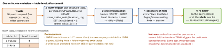

cross-platform · folio
In one line: Room is a compile-time layer over SQLite: KSP reads @Entity/@Dao/@Database,
checks every SQL string against the schema and generates the implementation. Observable
queries work by SQLite triggers that mark a table dirty; after each transaction the
InvalidationTracker re-runs every query that reads that table. The schema version is a
contract: every change needs a migration or data is lost.
Download PDF Print view LaTeX source


Codegen & schema
ksp(room-compiler)generatesAppDatabase_Impl,NoteDao_Impl; a typo’d column is a build error. Kotlin codegen is the default on KSP (2.7+); kapt/Java still work in Room 2, not in Room 3.@Entity(indices = [Index("folderId")], foreignKeys = [ForeignKey(Folder::class, ["id"], ["folderId"], onDelete = CASCADE)])— Room warns if an FK column is not indexed (every parent delete would scan).@Upsert(2.5+): insert-or-update.@Embeddedflattens a class into columns (prefix); entities may not hold references to other entities — relations are queried, not lazy-loaded.@TypeConverterpairs (Instant↔Long) registered with@TypeConverterson the DB, DAO or field.
Example — many-to-many
@Entity data class Playlist(@PrimaryKey val id: Long, val name: String)
@Entity data class Song(@PrimaryKey val id: Long, val title: String)
@Entity(primaryKeys = ["playlistId", "songId"], indices = [Index("songId")])
data class PlaylistSong(val playlistId: Long, val songId: Long)
data class PlaylistWithSongs(
@Embedded val playlist: Playlist,
@Relation(parentColumn = "id", entityColumn = "id",
associateBy = Junction(PlaylistSong::class,
parentColumn = "playlistId", entityColumn = "songId"))
val songs: List<Song>)
@Dao interface PlaylistDao {
@Transaction @Query("SELECT * FROM Playlist WHERE id = :id")
fun observe(id: Long): Flow<PlaylistWithSongs?> // 2 queries
@Upsert suspend fun upsert(song: Song) }@Relation = a second query per parent batch — without @Transaction a write between the two gives a torn read.
Threading & transactions
- A blocking DAO call on the main thread throws
IllegalStateException(unlessallowMainThreadQueries()).suspendDAOs hop to Room’s executors / query context themselves — nowithContext(IO)needed. - Multi-DAO write:
db.withTransaction { … }(one writer at a time; readers go on under WAL, the default journal mode except on low-RAM devices).
FTS, Paging
@Fts4(contentEntity = Note::class) @Entity class NoteFts(val title: String) + WHERE NoteFts MATCH :q (join on rowid); Room 3 adds @Fts5. A DAO returning PagingSource<Int, Note> (room-paging) is invalidated by the same tracker; RemoteMediator writes pages into the table.
Migrations — the version is a contract
- Room stores the schema’s identity hash; a DB at another version with no path →
IllegalStateExceptionat open. - Manual:
val M1_2 = Migration(1, 2) { db -> db.execSQL("ALTER TABLE Song ADD COLUMN len INTEGER NOT NULL DEFAULT 0") }. Paths chain 1→2→3 or jump 1→3. autoMigrations = [AutoMigration(2, 3, spec = S::class)]diffs two exported schema JSONs; rename vs drop+add needs a spec (@RenameColumn,@RenameTable,@DeleteColumn,@DeleteTable). SoexportSchema = true+room { schemaDirectory(…) }, JSONs in git.- Test:
MigrationTestHelper.createDatabase(1), insert rows,runMigrationsAndValidate(2, M1_2)= result must equal the v2 schema. - SQLite
ALTER TABLEcan’t change a type/constraint: new table → copy → drop → rename.
KMP (2.7+) & Room 3
- 2.7.0 (Apr 2025): KMP — Android, iOS, JVM. Builder
.setDriver(BundledSQLiteDriver())(SQLite compiled from source, same version everywhere).setQueryCoroutineContext(Dispatchers.IO);@ConstructedBy+expect object … : RoomDatabaseConstructor<AppDb>. Common DAOs:suspend/Flowonly;useWriterConnection{}. - Room 3.0 (stable 1 Jul 2026,
androidx.room3): KSP + Kotlin only,SQLiteDriveronly (noSupportSQLite/Cursor), coroutines-first,InvalidationTracker.createFlow(), web targets.
Traps
fallbackToDestructiveMigration()in release = a silent wipe on any missed path; at most…OnDowngrade().- “Flow emits the changed row” — it re-runs the query, emits everything.
- New
version, schema JSON not committed — no AutoMigration later.
Remember: KSP checks SQL · triggers mark tables · commit → re-query · every version needs a tested path.